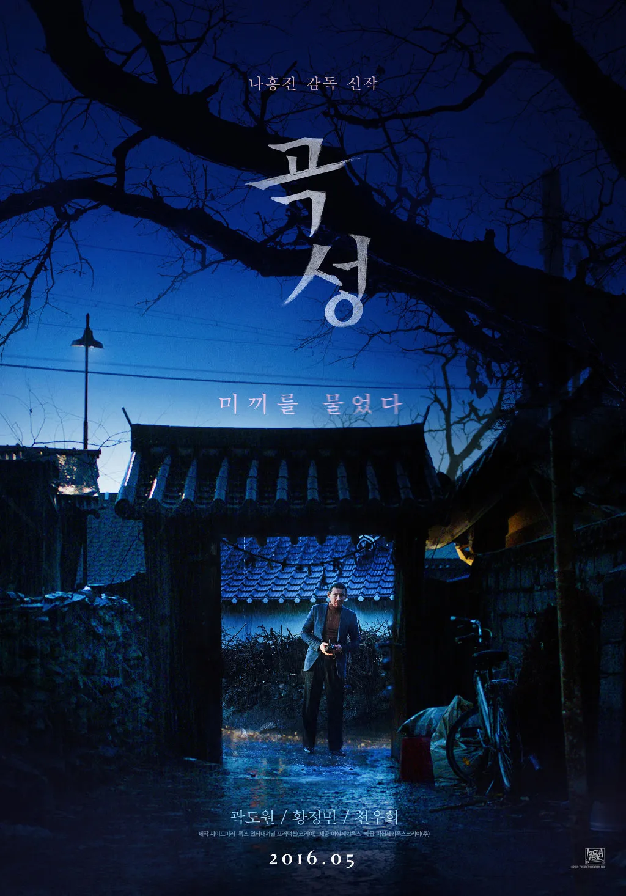
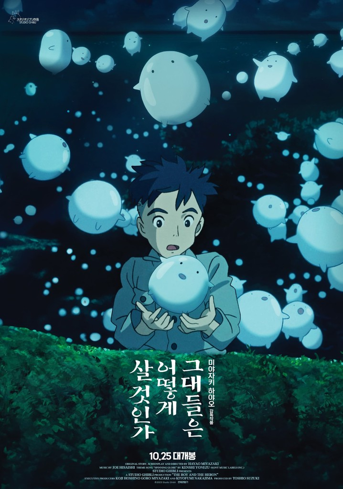
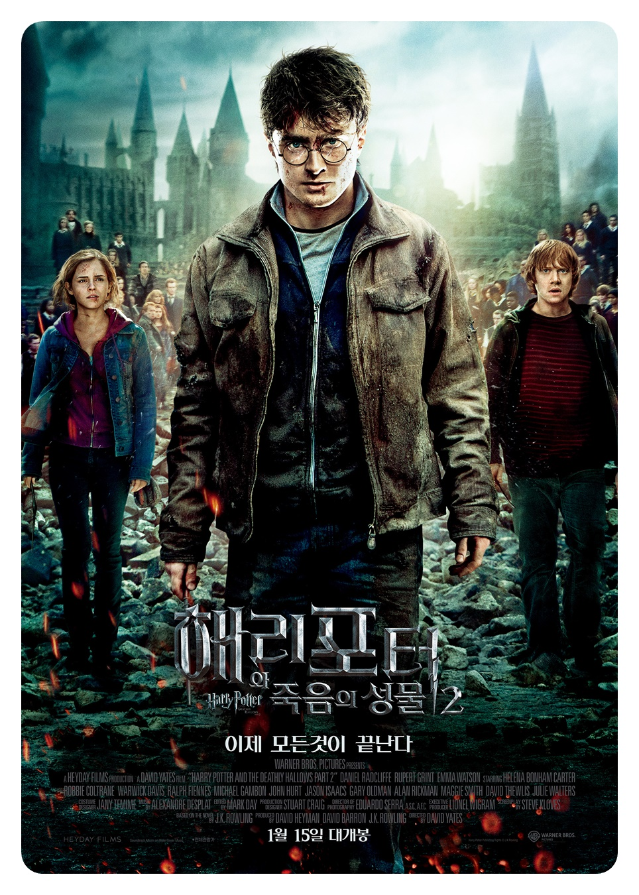
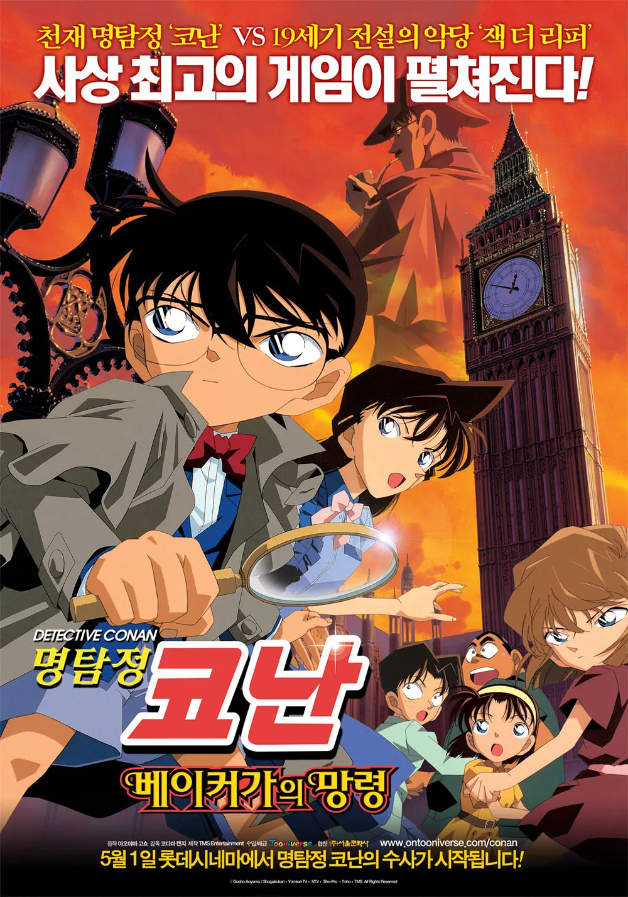
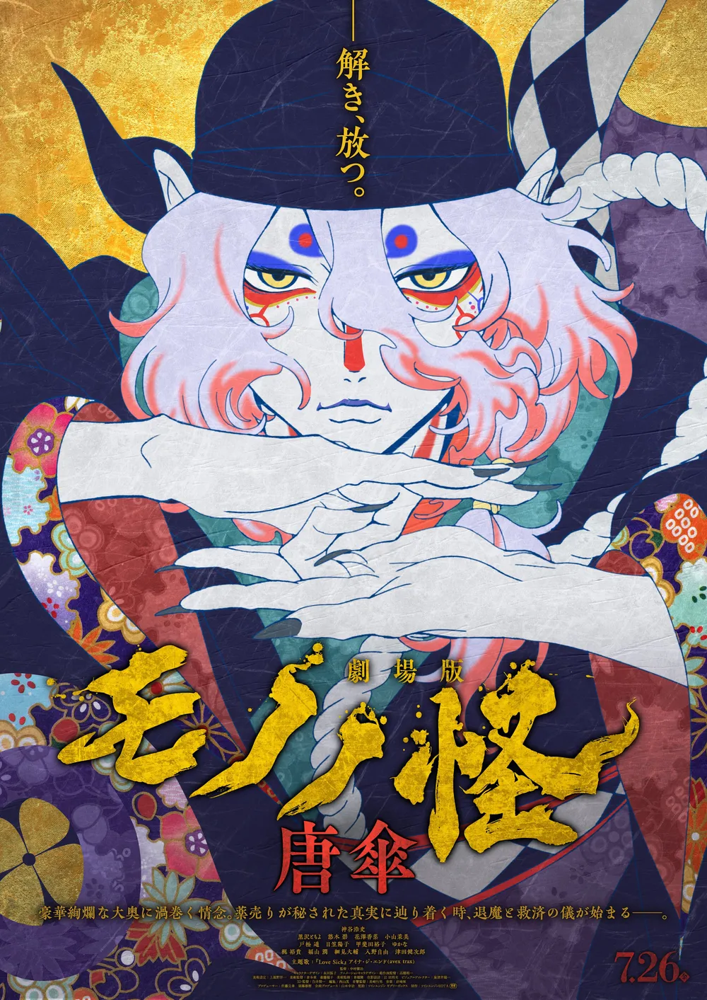

전체 이용가
전체 이용가
15세 이용가
19세 이용가
범죄도시2
가리봉동 소탕작전 후 4년 뒤, 금천서 강력반은 베트남으로 도주한 용의자를 인도받아 오라는 미션을 받는다. 괴물형사 ‘마석도’와 ‘전일만’ 반장은 현지 용의자에게서 수상함을 느끼고, 그의 뒤에 무자비한 악행을 벌이는 ‘강해상’이 있음을 알게 된다. ‘마석도’와 금천서 강력반은 한국과 베트남을 오가며 역대급 범죄를 저지르는 ‘강해상’을 본격적으로 쫓기 시작하는데…
바로구매
장바구니
16000원

곡성
절대 현혹되지 마라 낯선 외지인이 나타난 후 벌어지는 의문의 연쇄 사건들로 마을이 발칵 뒤집힌다. 경찰은 집단 야생 버섯 중독으로 잠정적 결론을 내리지만 모든 사건의 원인이 그 외지인 때문이라는 소문과 의심이 걷잡을 수 없이 퍼져 나간다. 경찰 ‘종구’는 현장을 목격했다는 여인 ‘무명’을 만나면서 외지인에 대한 소문을 확신하기 시작한다. 딸 ‘효진’이 피해자들과 비슷한 증상으로 아파오기 시작하자 다급해진 ‘종구’. 외지인을 찾아 난동을 부리고, 무속인 ‘일광’을 불러 들이는데...
바로구매
장바구니
16000원

그대들은 어떻게 살것인가
11살 소년 마히토가 돌아가신 엄마의 고향에서 파란 털을 가진 왜가리 한 마리를 만난다. 마히토는 미스터리한 탑으로 그를 유인하는 왜가리를 따라 '이세계'로의 모험을 시작한다.
바로구매
장바구니
15000원

해리포터와 죽음의 성물 2부
해리와 론, 헤르미온느는 볼드모트를 불멸로 만들어주는 다섯 번째 호크룩스를 찾기 위해 호그와트로 돌아온다. 이후 자신의 호크룩스들이 파괴되었다는 사실을 눈치챈 볼드모트는 죽음을 먹는 자들과 함께 호그와트로 향한다. 마법사들의 전쟁터가 되어버린 호그와트에서 해리는 싸움을 끝낼 수 있는 마지막 호크룩스에 대한 실마리를 얻는다.
바로구매
장바구니
17000원
파묘
기이한 병이 대물림되는 집안의 의뢰를 받은 무당 화림은 무속인 봉길, 풍수사 상덕, 장의사 영근과 함께 불길한 기운이 느껴지는 묘를 파내기로 하고 끔찍한 진실과 마주한다.
바로구매
장바구니
16000원

베이커가의 망령
인공 지능을 연구하던 전우주라는 소년이 건물에서 추락하는 사건이 발생한다. 이후 가상현실 게임 코쿤의 시연회에 초대받은 코난과 친구들이 게임을 하던 중 노아의 방주라는 인공지능 소프트웨어가 나타나 시스템을 점령하고, 게임을 하던 어린이들의 목숨을 건 게임을 제안한다. 코난은 모두의 목숨을 구하기 위해 셜록 홈즈가 활약하던 영국을 배경으로 한 게임 속에서 살인마 잭 더 리퍼를 추적한다.
바로구매
장바구니
15000원

모노노케: 우주망령
정념이 소용돌이치는 오오쿠. '천자'의 후계자를 낳기 위해 아름답고 재능 있는 여성들이 모인 동시에, 관료기구이기도 한 장소이다. '사회'이기도 한 공간에, 신입 시녀인 아사와 카메가 발을 들여놓는다. 경력을 발전시키려는 아사와 오오쿠에서 자신의 자리를 찾으려는 카메. 첫날부터 집단의 일부가 되기 위해, '물의 여신'에게 「소중한 것」을 바치라는 '의식'에 참여할 것을 강요 받는다. 그곳에서의 사건을 계기로, 두 사람 사이에는 유대감이 피어난다. 오오쿠의 시녀장인 우타야마는 번영을 최우선으로 여기며 시녀들을 하나로 모으지만, 그녀의 얼굴 뒤에는 무언가를 숨기고 있다. 그러한 가운데, 그녀들을 덮어오는 '무언가'. 축적되는 여인들의 정념, 울려 퍼지는 종이우산이 회전하는 듯한 기이한 소리, 뭔가에 홀린 듯이 이성을 잃어가는 시녀... 마침내 비극이 발생하고, 모노노케를 쫓아 오오쿠에 나타난 약장수. 하지만 모노노케를 베어낼 수 있는 퇴마의 검은 「형태」,「내력」,「까닭」이 밝혀지지 않으면 봉인을 풀 수 없다. 약장수가 오오쿠에 숨겨진 두렵고도 슬픈 진실에 도달할 때, 퇴마와 구원의 의식이 시작된다—.
바로구매
장바구니
15000원